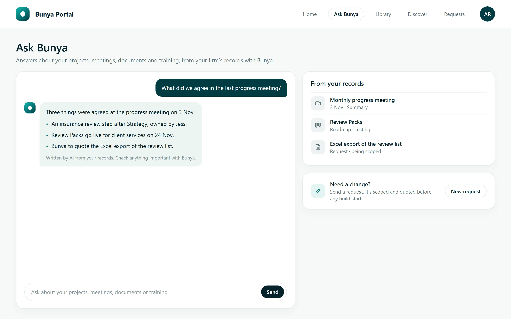
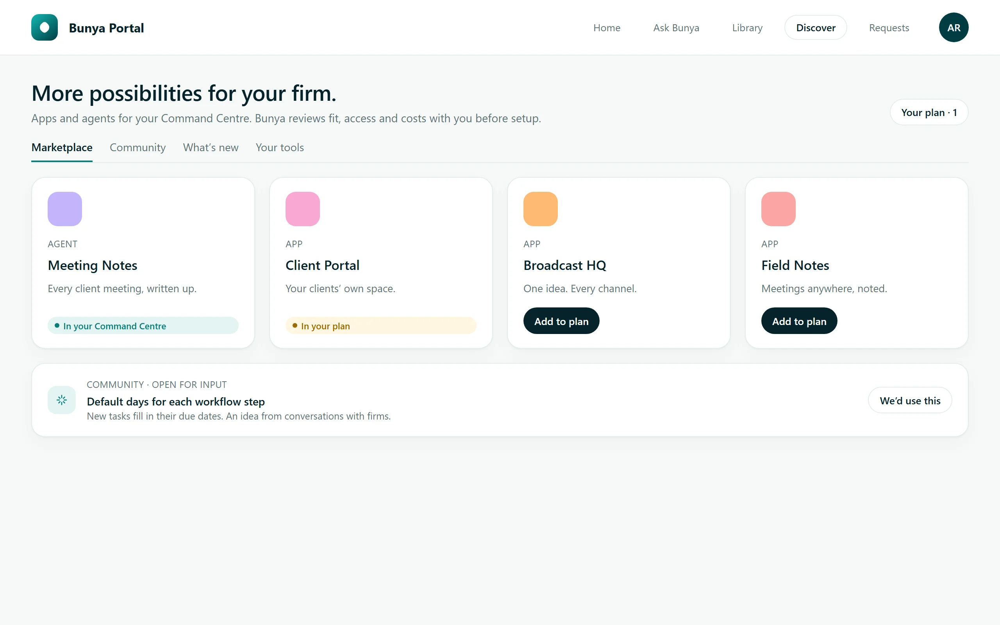
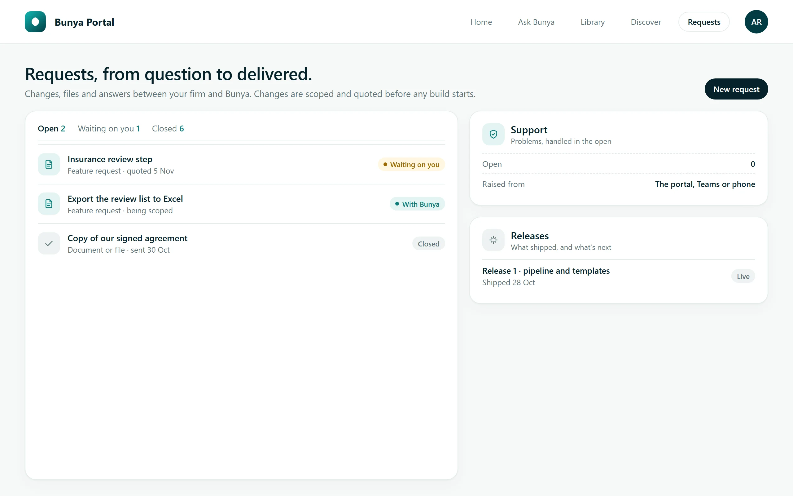

Bunya PortalYour Command Centre, your way.
Ask about your work, request changes, add apps and follow every project, in one place.
Included with Command Centre, from $3 per household a month
Ask Bunya answers from your firm’s records.
Changes are scoped and quoted before any build starts.
Add apps and agents from Discover.
How it works
- 1Ask
Ask Bunya about your projects, meetings, documents and training.
- 2Request
Ask for a change, a file or an answer. Changes are scoped and quoted first.
- 3Follow
See each project’s health, target date and next progress meeting.
- 4Discover
Add apps and agents to your plan, and back ideas from other firms.
Bunya invites your team. Everyone sees chat, the library, meetings, the roadmap, requests and support. Invoices and balances are only for the people you choose.
Up close



Your projects, anything waiting on your team, recent meetings and your next progress meeting.
Today, and with Bunya Portal
What’s included
Questions
Does every firm get it?
Yes. Every Command Centre comes with Bunya Portal.
Who can see what?
Everyone you invite sees chat, the library, meetings, the roadmap, requests and support. Invoices and balances are only for the people you choose.
Does Ask Bunya change anything?
No. It answers questions from your records. Changes go through a request, and are scoped and quoted before any build starts.
Can we buy apps in the portal?
No. Adding an app or agent to your plan starts the conversation. We review fit, access and costs with you before setup.
Bunya Portal, ready when you are.
Included with Command Centre, from $3 per household a month.